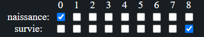

Le jeu de la vie est l’automate cellulaire le plus connu.
Il a été inventé par John Conway, un mathématicien génial !
Un automate cellulaire est un type de simualiton extremement simple. C’est presque un jeu informatique.
Pour faire un automate cellulaire, il faut seulement:
- Une grille de cellules
- Des états à mettre dans cette grille
- Une règle qui va déterminer comment chaque cellule va évoluer en fonction de ses voisins.
Note: On considère en général les 8 voisins autour d’une cellule:
⬜⬜⬜⬜⬜
⬜â•â•â•â¬œ Les 8 voisins (en rouge)
⬜â•â¬›â•â¬œ de la cellule noire
⬜â•â•â•â¬œ
⬜⬜⬜⬜⬜
Pour les automates cellulaires type jeu de la vie, ce qu’on appelle le nombre de voisins est simplement le nombre de cellules vivantes parmi les voisins.
⬜⬜⬜🟫🟫
⬜🟫🟫⬜⬜ La cellule bleue a 5 voisins
⬜🟫🟦🟫⬜ (en marron): parmi ses 8 voisins,
⬜⬜🟫⬜⬜ 5 sont vivants
⬜⬜⬜⬜🟫
La grille du jeu de la vie
Une grille de carrés, soit morts soit vivant. Tout simplement
Les règles du jeu de la vie:
- une cellule morte avec 3 voisins ⟶ une cellule nait
- une cellule vivante avec 2 ou 3 voisins ⟶ la cellule survit
- sinon ⟶ la cellule meurt (ou reste morte)
Et c’est tout !
Il suffit de répéter ces règles sur toutes les cellules, le tout pendant des milliers de générations.
L’intéret de cette page web est de pouvoir changer ces règles et voir ce qui se passe.
Et on se rend vite compte que les règles choisies par Conway est très simple, et pourtant crée des phénomènes passionants.
Quelques règles intéréssantes
Notation: on note une règle B[naissance]/S[survie]
Exemple: B3/S23 signifie que la cellule
-
quand elle est morte, nait seulement avec 3 voisins vivants (la lettre B est pour "birth")
-
quand elle est vivante, survie seulement avec 2 ou 3 voisins vivants (lettre S pour "survive").
B3/S23 est donc la règle originale du jeu de la vie.
| règle |
|---|
| B0/ S8 |
| B23/ S0 |
| B0/ S56 |
| B2/ S0 |
| B3/ S1235 |
| B3/ S012345678 |
| B3/ S45678 |
| B25678/ S5678 |
Essayez de tester la première règle. Cette règle s’appelle B0/ S8, c’est à dire qu’une cellule morte nait quand elle a 0 voisins vivants (quand elle est isolée), et une cellule vivante survit uniquement quand elle a 8 voisins.
Donc il faut cocher les carrés suivants:

Ensuite, cliquez simplement sur "tester la règle"
Pour aller plus loin:
Une vidéo qui présente le jeu de la vie: